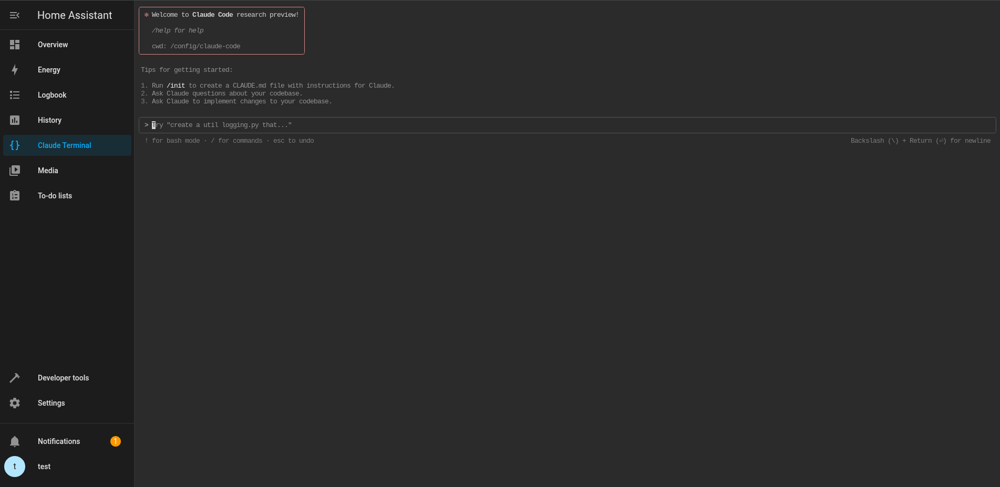

Ingress terminal
Opens from the Home Assistant sidebar for admin users and runs in a browser terminal powered by ttyd.
Unofficial OpenAI Codex CLI terminal for Home Assistant.
A Home Assistant add-on that opens Codex inside an ingress browser
terminal, starts in /config, and keeps the tools needed
for real Home Assistant work close at hand.

What it gives you
Opens from the Home Assistant sidebar for admin users and runs in a browser terminal powered by ttyd.
Codex runs inside tmux so refreshes, websocket drops, and sidebar navigation can reattach instead of starting over.
Includes Codex CLI, Home Assistant CLI, GitHub CLI, image uploads,
persistent packages, and state under /data/.codex.
Headless auth
Browser callback login from inside Home Assistant can point at the
wrong machine. Codex Terminal Pro guides first-time setup toward the
codex-auth-helper device-code flow, which is more
reliable inside an add-on container.
The add-on is intentionally admin-only because it can inspect and
edit Home Assistant configuration. Back up first, inspect diffs, run
ha core check, and restart only after the checks pass.
Install
Add the repository to Home Assistant's add-on store to receive updates from GitHub instead of using a local development install.